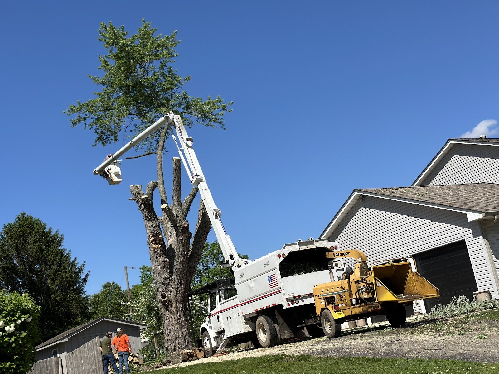
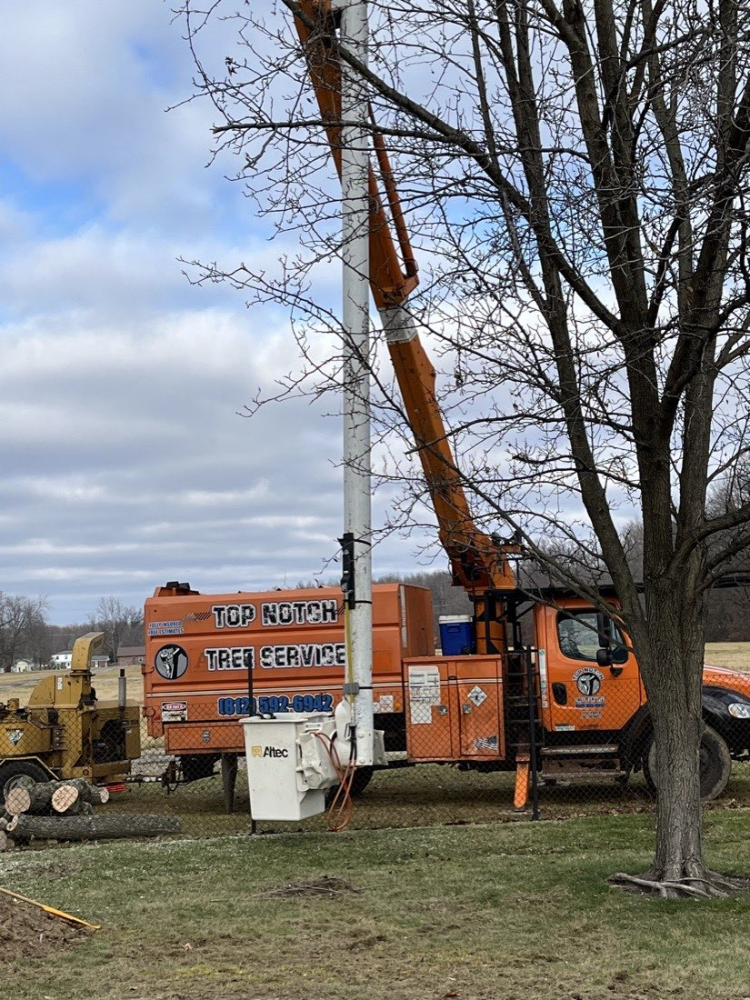
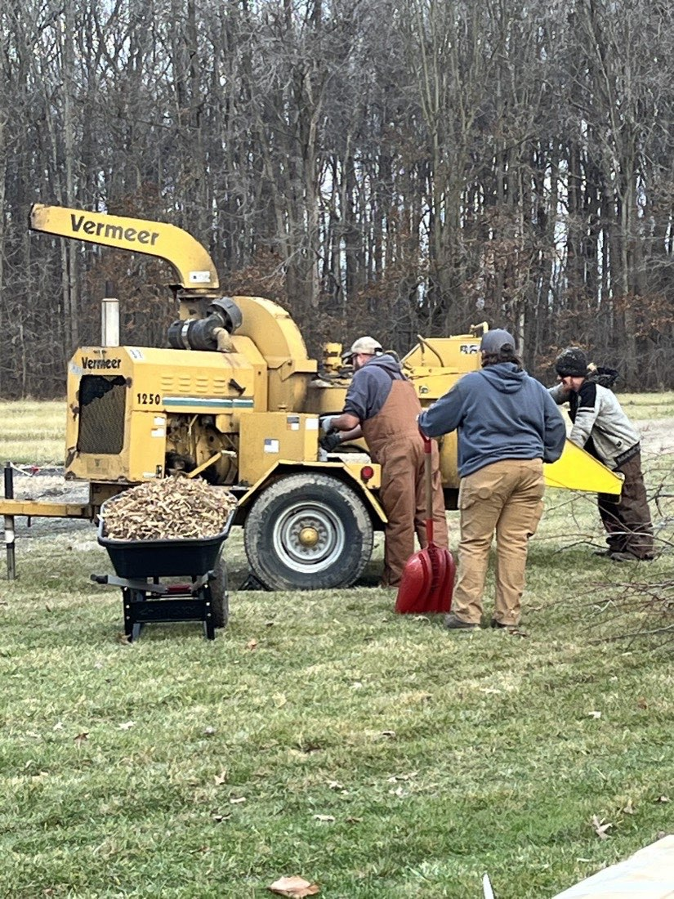
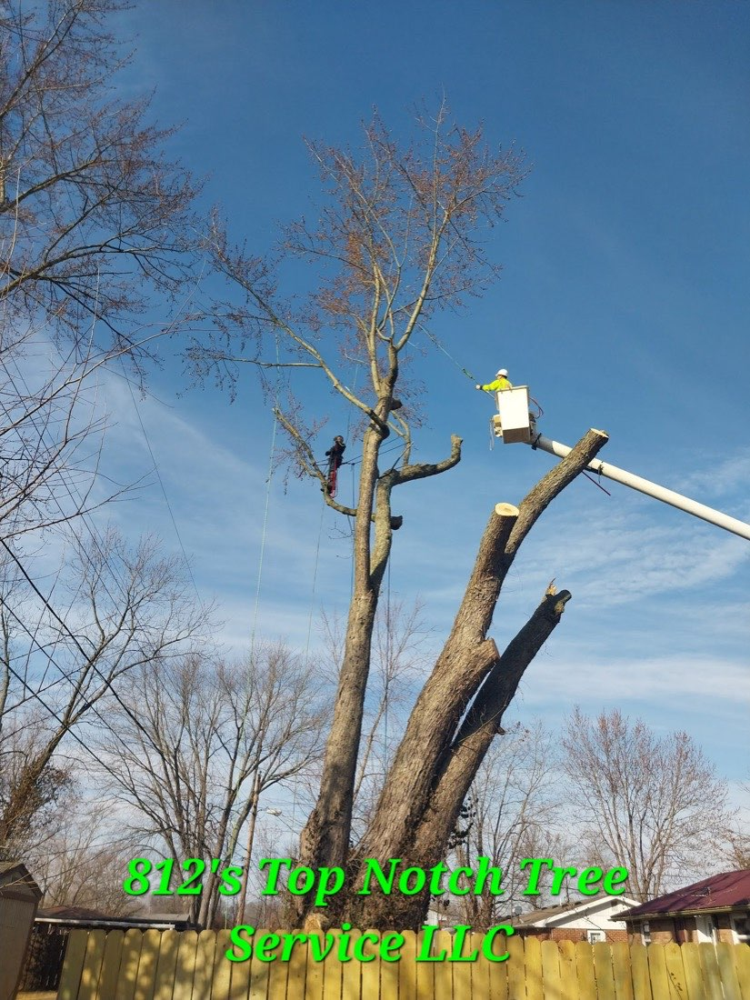
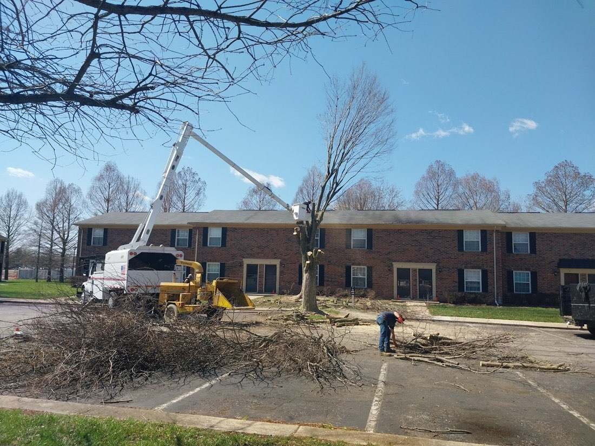
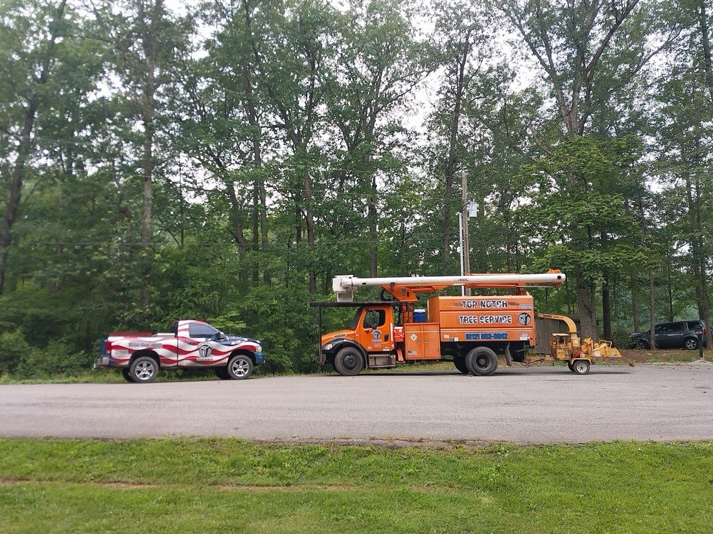

01
Hazardous & Large Tree Removal
Dead, leaning, storm-damaged or just-too-close trees taken down in controlled pieces with the bucket truck — over roofs, fences and lines without the gamble.

Tree Care · Jennings & Bartholomew County, IN
Hazardous removals, trimming, and full cleanup for homes and properties around North Vernon & Columbus. Insured crew, bucket truck, and a yard left clean when we leave.
Why folks call us first
812 Top Notch runs a real bucket truck and chipper, so a leaning hackberry over your roof or a storm-split limb comes down in controlled sections — no rope-and-pray. The reason 39 neighbors left reviews is simple: the tree's gone, the property's intact, and the yard is raked clean.
Hazardous removals next to homes, lines and fences — sectioned down with a bucket truck, not muscled.
Limbs into the chipper, brush and rounds cleaned up — you're not left with a pile to deal with.
Fully insured crew and a free estimate before any work starts — so you know the plan and the price first.
What we do
Dead, leaning, storm-damaged or just-too-close trees taken down in controlled pieces with the bucket truck — over roofs, fences and lines without the gamble.
Clearing limbs off the roof, lifting the canopy, and shaping back overgrowth so a healthy tree stays out of trouble and out of your gutters.
Chipping limbs on site, clearing brush, and hauling off rounds — residential yards and commercial properties left tidy and usable again.
Residential and commercial — including HOA and apartment-property tree work. Not sure where your job fits? Call and ask.
“A truly top notch experience. I hired them for the removal of a giant hackberry tree dangerously close to my house, and I couldn't be happier — professional, efficient, and they delivered exactly what they promised.”
Out in the field
Every photo here is our own crew and equipment on real Indiana properties.





Where we work
We cover North Vernon, Columbus, Seymour and the surrounding Jennings and Bartholomew County towns. If you've got a tree that needs to come down or get cleaned up, give us a call — we'll come look at it and give you an honest estimate, free.
Free estimates
(812) 592-6942Service area centered on North Vernon, IN.
Got a tree that worries you?
Call 812 Top Notch Tree Service for a free, no-pressure estimate. We'll tell you straight what it takes to get it down safely and cleaned up.
Call (812) 592-6942